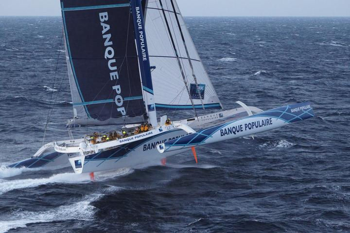
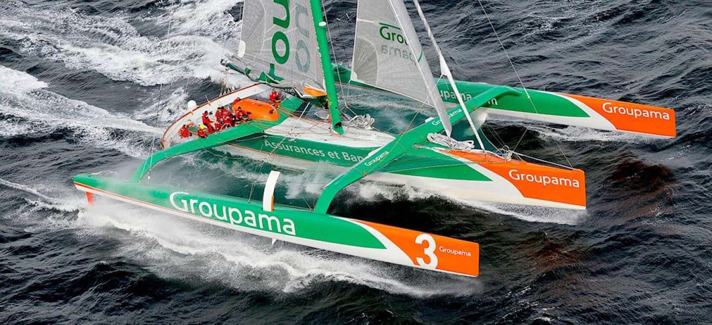
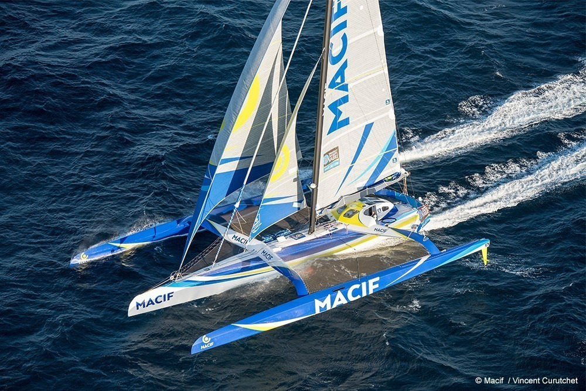
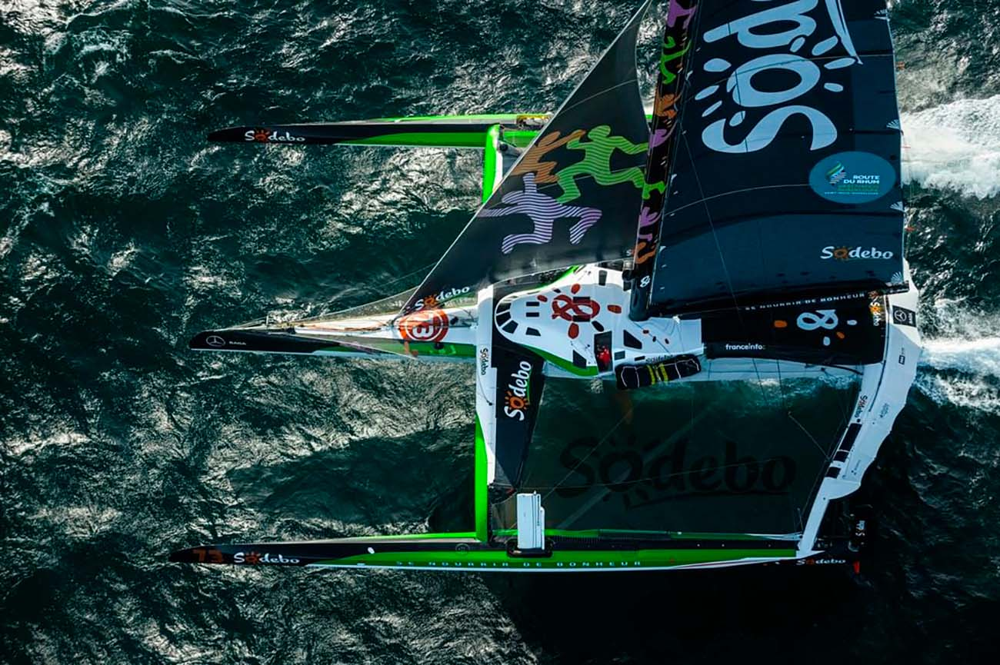
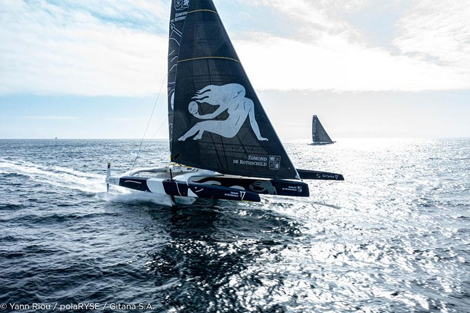
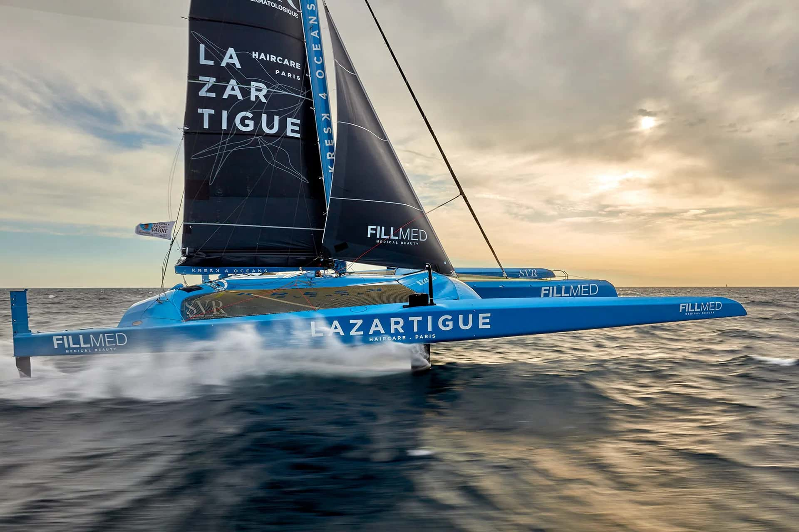

Les Ultims
Qu'est-ce qu'un Ultim ?
Les Ultims sont les plus grands et les plus rapides voiliers de course au large. Ce sont des trimarans géants de 105 pieds (32 mètres).
Ils sont conçus pour battre des records et naviguer dans les océans les plus difficiles, en solitaire ou en équipage.
Leur apparition
Les Ultims apparaissent dans les années 2000 pour battre des records. En 2015, une classe officielle est créée pour garantir la sécurité.
Grâce aux foils, ils peuvent atteindre plus de 45 nœuds (80 km/h).
- Premiers Ultims : 2000
- Création de la classe Ultim 32/23 : 2015
- Ultims à foils généralisés : 2020
Galerie Ultim





